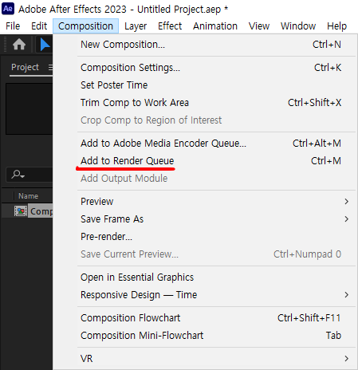
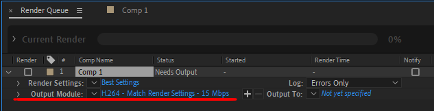
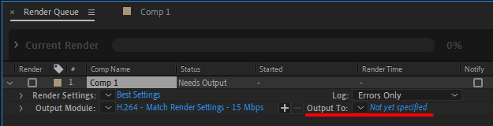
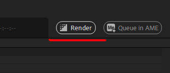

랜더링
After Effects에서 작업한 프로젝트를 최종적으로 랜더링하여 출력하는 방법을 설명합니다. 랜더링은 프로젝트를 동영상 파일로 출력하거나, 여러 형식으로 저장하는 과정입니다.
랜더링 과정
- 1. 랜더 큐에 추가: 작업이 완료된 후 Composition 메뉴에서 Add to Render Queue를 선택합니다.

- 2. 출력 설정: 랜더 큐 창에서 Output Module을 선택해 출력 형식을 설정합니다. MP4, AVI 등 다양한 형식으로 저장할 수 있습니다.

- 3. 저장 경로 선택: Output To 옵션을 클릭해 파일을 저장할 위치를 지정합니다.

- 4. 랜더링 시작: 모든 설정이 완료되면 Render 버튼을 클릭하여 랜더링을 시작합니다.

랜더링 옵션
- Resolution (해상도): 원하는 해상도로 랜더링을 설정할 수 있습니다. 고해상도일수록 더 많은 시간이 소요될 수 있습니다.
- Frame Rate (프레임 속도): 초당 프레임 수를 설정하여 부드러운 영상을 만들 수 있습니다. 일반적으로 24fps, 30fps를 사용합니다.
- Output Format (출력 형식): 영상 형식을 설정합니다. MP4는 일반적으로 많이 사용되며, 무압축 형식은 품질이 더 좋습니다.
랜더링 과정이 완료되면 선택한 경로에 파일이 저장됩니다. 출력된 파일을 확인하고, 필요시 추가 편집을 진행할 수 있습니다.